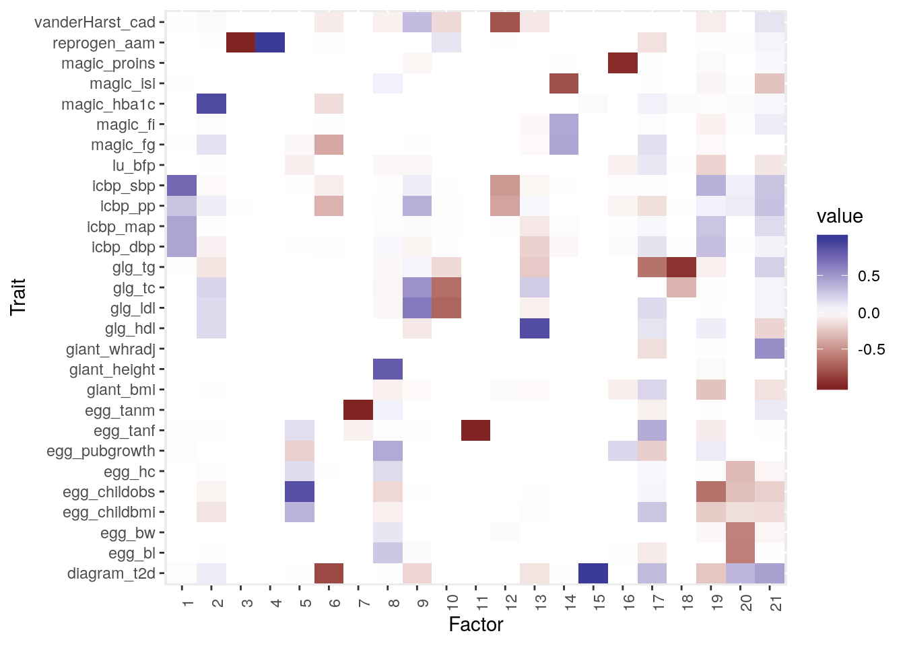
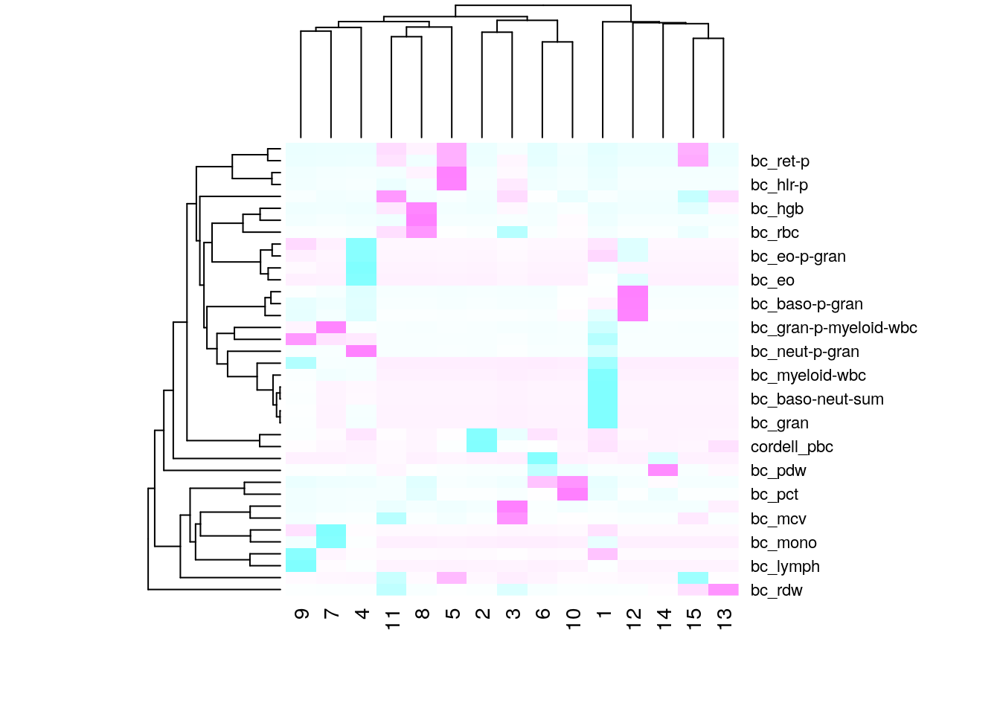

Last updated: 2019-09-06
Checks: 7 0
Knit directory: sumstatFactors/
This reproducible R Markdown analysis was created with workflowr (version 1.4.0.9000). The Checks tab describes the reproducibility checks that were applied when the results were created. The Past versions tab lists the development history.
Great! Since the R Markdown file has been committed to the Git repository, you know the exact version of the code that produced these results.
Great job! The global environment was empty. Objects defined in the global environment can affect the analysis in your R Markdown file in unknown ways. For reproduciblity it’s best to always run the code in an empty environment.
The command set.seed(20190819) was run prior to running the code in the R Markdown file. Setting a seed ensures that any results that rely on randomness, e.g. subsampling or permutations, are reproducible.
Great job! Recording the operating system, R version, and package versions is critical for reproducibility.
Nice! There were no cached chunks for this analysis, so you can be confident that you successfully produced the results during this run.
Great job! Using relative paths to the files within your workflowr project makes it easier to run your code on other machines.
Great! You are using Git for version control. Tracking code development and connecting the code version to the results is critical for reproducibility. The version displayed above was the version of the Git repository at the time these results were generated.
Note that you need to be careful to ensure that all relevant files for the analysis have been committed to Git prior to generating the results (you can use wflow_publish or wflow_git_commit). workflowr only checks the R Markdown file, but you know if there are other scripts or data files that it depends on. Below is the status of the Git repository when the results were generated:
Ignored files:
Ignored: .Rhistory
Ignored: .Rproj.user/
Ignored: analysis/fixed_factors_cache/
Ignored: analysis/metabo_flash_experiments_cache/
Ignored: analysis/pathway_factors_cache/
Untracked files:
Untracked: analysis_data/.~lock.metabo2_gwas.csv#
Untracked: analysis_data/HACER-enhancers.txt
Untracked: analysis_data/HACER_README.txt
Untracked: analysis_data/bc_gwas_mats.RDS
Untracked: analysis_data/eqtl_genes.RDS
Untracked: analysis_data/flashier_res2019-09-03.RDS
Untracked: analysis_data/metabo2_gwas.csv
Untracked: analysis_data/metabo3_order1__flashier__by_col.RDS
Untracked: analysis_data/metabo3_order1__flashier__by_row.RDS
Untracked: analysis_data/metabo3_order1__flashier__constant.RDS
Untracked: analysis_data/metabo3_order1__flashier__kronecker.RDS
Untracked: analysis_data/metabo3_order1__flashier__noisy_bycol.RDS
Untracked: analysis_data/metabo3_order1__flashier__noisy_byrow.RDS
Untracked: analysis_data/metabo3_order1__flashier__noisy_constant.RDS
Untracked: analysis_data/metabo3_order1__flashier__zero.RDS
Untracked: analysis_data/metabo3_order1__from_data__by_col.RDS
Untracked: analysis_data/metabo3_order1__from_data__by_row.RDS
Untracked: analysis_data/metabo3_order1__from_data__constant.RDS
Untracked: analysis_data/metabo3_order1__from_data__kronecker.RDS
Untracked: analysis_data/metabo3_order1__from_data__noisy_bycol.RDS
Untracked: analysis_data/metabo3_order1__from_data__noisy_byrow.RDS
Untracked: analysis_data/metabo3_order1__from_data__noisy_constant.RDS
Untracked: analysis_data/metabo3_order1__from_data__zero.RDS
Untracked: analysis_data/metabo3_order1__soft_impute__by_col.RDS
Untracked: analysis_data/metabo3_order1__soft_impute__by_row.RDS
Untracked: analysis_data/metabo3_order1__soft_impute__constant.RDS
Untracked: analysis_data/metabo3_order1__soft_impute__kronecker.RDS
Untracked: analysis_data/metabo3_order1__soft_impute__noisy_bycol.RDS
Untracked: analysis_data/metabo3_order1__soft_impute__noisy_byrow.RDS
Untracked: analysis_data/metabo3_order1__soft_impute__noisy_constant.RDS
Untracked: analysis_data/metabo3_order1__soft_impute__zero.RDS
Untracked: analysis_data/metabo3_order1_mask__flashier__by_col.RDS
Untracked: analysis_data/metabo3_order1_mask__flashier__by_row.RDS
Untracked: analysis_data/metabo3_order1_mask__flashier__constant.RDS
Untracked: analysis_data/metabo3_order1_mask__flashier__kronecker.RDS
Untracked: analysis_data/metabo3_order1_mask__flashier__noisy_bycol.RDS
Untracked: analysis_data/metabo3_order1_mask__flashier__noisy_byrow.RDS
Untracked: analysis_data/metabo3_order1_mask__flashier__noisy_constant.RDS
Untracked: analysis_data/metabo3_order1_mask__flashier__zero.RDS
Untracked: analysis_data/metabo3_order1_mask__from_data__by_col.RDS
Untracked: analysis_data/metabo3_order1_mask__from_data__by_row.RDS
Untracked: analysis_data/metabo3_order1_mask__from_data__constant.RDS
Untracked: analysis_data/metabo3_order1_mask__from_data__kronecker.RDS
Untracked: analysis_data/metabo3_order1_mask__from_data__noisy_bycol.RDS
Untracked: analysis_data/metabo3_order1_mask__from_data__noisy_byrow.RDS
Untracked: analysis_data/metabo3_order1_mask__from_data__noisy_constant.RDS
Untracked: analysis_data/metabo3_order1_mask__from_data__zero.RDS
Untracked: analysis_data/metabo3_order1_mask__soft_impute__by_col.RDS
Untracked: analysis_data/metabo3_order1_mask__soft_impute__by_row.RDS
Untracked: analysis_data/metabo3_order1_mask__soft_impute__constant.RDS
Untracked: analysis_data/metabo3_order1_mask__soft_impute__kronecker.RDS
Untracked: analysis_data/metabo3_order1_mask__soft_impute__noisy_bycol.RDS
Untracked: analysis_data/metabo3_order1_mask__soft_impute__noisy_byrow.RDS
Untracked: analysis_data/metabo3_order1_mask__soft_impute__noisy_constant.RDS
Untracked: analysis_data/metabo3_order1_mask__soft_impute__zero.RDS
Untracked: analysis_data/metabo_gwas.csv
Untracked: analysis_data/pathway_loadings_data.RDS
Untracked: buttons.css
Untracked: code/flashier_compare.R
Untracked: code/hide_output.js
Untracked: snp_annot.RDS
Note that any generated files, e.g. HTML, png, CSS, etc., are not included in this status report because it is ok for generated content to have uncommitted changes.
These are the previous versions of the R Markdown and HTML files. If you’ve configured a remote Git repository (see ?wflow_git_remote), click on the hyperlinks in the table below to view them.
| File | Version | Author | Date | Message |
|---|---|---|---|---|
| Rmd | ad27e4a | Jean Morrison | 2019-09-07 | wflow_publish(c(“analysis/basic_flash_analysis.Rmd”, |
| html | fce679d | Jean Morrison | 2019-08-27 | Build site. |
| Rmd | ba80a6a | Jean Morrison | 2019-08-27 | wflow_publish(files = c(“analysis/index.Rmd”, “analysis/basic_flash_analysis.Rmd”)) |
The first thing I wanted to do to explore this idea was to analyze some existing data using flashr. I used the same approach for two different applications. The first is a set of metabolic traits from different studies. The second is a set of blood cell traits from Astle et al (2016).
Mathematically the model I am fitting is this \[ Y = LDF^T + E \] where \(Y\) is an \(N\times M\) matrix of effect estimates (\(N\) = number of variants, \(M\) = number of traits), \(L\) is the “loadings” matrix which is \(N\timesK\) (\(K\) = number of factors) and \(F\) is the \(M\times K\) “factors” matrix. The residuals \(N\times M\) matrix \(E\) is assumed to have \(E_{ij} \sim N(0, s_{ij})\) where \(s_{ij}\) is the estimated standard error of \(Y_{ij}\). \(D\) is a \(K\times K\) diagonal matrix of weights that capture the strength of each factor.
The procedure that I used for both data sets is this:
Y matrix in flash is the matrix of \(\hat{\beta}\) while the matrix of standard errors is the S matrix. The flashr commands used aredata <- with(mats, flash_set_data(Y = beta_hat, S = se_hat))
f <- flash_add_factors_from_data(data,K=kmax, var_type="zero")
f <- flash_backfit(data,f, var_type="zero")
f_greedy <- flash_add_greedy(data,Kmax=kmax, var_type="zero")
f_greedy <- flash_backfit(data,f_greedy, var_type="zero")
fits <- list(f = f, f_greedy = f_greedy)
saveRDS(fits, file=out_file)So far I have only analyzed results of the backfitting algorith. These steps are implemented in a Snakemake pipeline in /project2/xinhe/jean/gwas_factors/extract_gwas_matrix.py.
First I plot a heatmap of the factors matrix. This can be interpreted as the (standardized) effect of each factor on each trait.
library(tidyverse)── Attaching packages ──────────────────────────────────────────────────────────────── tidyverse 1.2.1 ──✔ ggplot2 3.2.1 ✔ purrr 0.3.2
✔ tibble 2.1.3 ✔ dplyr 0.8.3
✔ tidyr 0.8.3 ✔ stringr 1.4.0
✔ readr 1.3.1 ✔ forcats 0.4.0── Conflicts ─────────────────────────────────────────────────────────────────── tidyverse_conflicts() ──
✖ dplyr::filter() masks stats::filter()
✖ dplyr::lag() masks stats::lag()library(reshape2)
Attaching package: 'reshape2'The following object is masked from 'package:tidyr':
smithslibrary(sumstatFactors)Registered S3 method overwritten by 'flashr':
method from
print.flash flashierWarning: replacing previous import 'intervals::reduce' by 'purrr::reduce'
when loading 'sumstatFactors'res <- readRDS("analysis_data/metabo_gwas_flash.RDS")
mats <- readRDS("analysis_data/metabo_gwas_mats.RDS")
factors <- as.data.frame(res$f$ldf$f)
traits <- str_split(mats$traits, "/") %>% map(., 8) %>% unlist(.)
traits <- str_replace(traits, "_summary_statistics.tsv.gz", "")
plot_factors(res$f$ldf$f, traits)
| Version | Author | Date |
|---|---|---|
| fce679d | Jean Morrison | 2019-08-27 |
res <- readRDS("analysis_data/bc_gwas_flash.RDS")
mats <- readRDS("analysis_data/bc_gwas_mats.RDS")
factors <- as.data.frame(res$f$ldf$f)
traits <- str_split(mats$traits, "/") %>% map(., 8) %>% unlist(.)
traits <- str_replace(traits, "_summary_statistics.tsv.gz", "")
plot_factors(res$f$ldf$f, traits)
| Version | Author | Date |
|---|---|---|
| fce679d | Jean Morrison | 2019-08-27 |
sessionInfo()R version 3.6.1 (2019-07-05)
Platform: x86_64-pc-linux-gnu (64-bit)
Running under: Ubuntu 18.04.2 LTS
Matrix products: default
BLAS: /usr/lib/x86_64-linux-gnu/openblas/libblas.so.3
LAPACK: /usr/lib/x86_64-linux-gnu/libopenblasp-r0.2.20.so
locale:
[1] LC_CTYPE=en_US.UTF-8 LC_NUMERIC=C
[3] LC_TIME=en_US.UTF-8 LC_COLLATE=en_US.UTF-8
[5] LC_MONETARY=en_US.UTF-8 LC_MESSAGES=en_US.UTF-8
[7] LC_PAPER=en_US.UTF-8 LC_NAME=C
[9] LC_ADDRESS=C LC_TELEPHONE=C
[11] LC_MEASUREMENT=en_US.UTF-8 LC_IDENTIFICATION=C
attached base packages:
[1] stats graphics grDevices utils datasets methods base
other attached packages:
[1] sumstatFactors_0.0.0.9000 reshape2_1.4.3
[3] forcats_0.4.0 stringr_1.4.0
[5] dplyr_0.8.3 purrr_0.3.2
[7] readr_1.3.1 tidyr_0.8.3
[9] tibble_2.1.3 ggplot2_3.2.1
[11] tidyverse_1.2.1
loaded via a namespace (and not attached):
[1] Rcpp_1.0.2 lubridate_1.7.4 lattice_0.20-38
[4] assertthat_0.2.1 zeallot_0.1.0 rprojroot_1.3-2
[7] digest_0.6.20 foreach_1.4.7 truncnorm_1.0-8
[10] R6_2.4.0 cellranger_1.1.0 plyr_1.8.4
[13] backports_1.1.4 evaluate_0.14 httr_1.4.1
[16] pillar_1.4.2 rlang_0.4.0 lazyeval_0.2.2
[19] pscl_1.5.2 readxl_1.3.1 rstudioapi_0.10
[22] ebnm_0.1-24 whisker_0.4 Matrix_1.2-17
[25] rmarkdown_1.15 labeling_0.3 RMySQL_0.10.17
[28] mixsqp_0.1-97 munsell_0.5.0 broom_0.5.2
[31] compiler_3.6.1 modelr_0.1.5 xfun_0.9
[34] pkgconfig_2.0.2 SQUAREM_2017.10-1 htmltools_0.3.6
[37] tidyselect_0.2.5 flashr_0.6-6 workflowr_1.4.0.9000
[40] intervals_0.15.1 codetools_0.2-16 crayon_1.3.4
[43] withr_2.1.2 MASS_7.3-51.4 grid_3.6.1
[46] DBI_1.0.0 nlme_3.1-141 jsonlite_1.6
[49] gtable_0.3.0 git2r_0.26.1 magrittr_1.5
[52] scales_1.0.0 cli_1.1.0 stringi_1.4.3
[55] fs_1.3.1 doParallel_1.0.15 xml2_1.2.2
[58] flashier_0.1.16 vctrs_0.2.0 generics_0.0.2
[61] iterators_1.0.12 tools_3.6.1 softImpute_1.4
[64] glue_1.3.1 hms_0.5.1 parallel_3.6.1
[67] yaml_2.2.0 colorspace_1.4-1 ashr_2.2-32
[70] rvest_0.3.4 knitr_1.24 haven_2.1.1